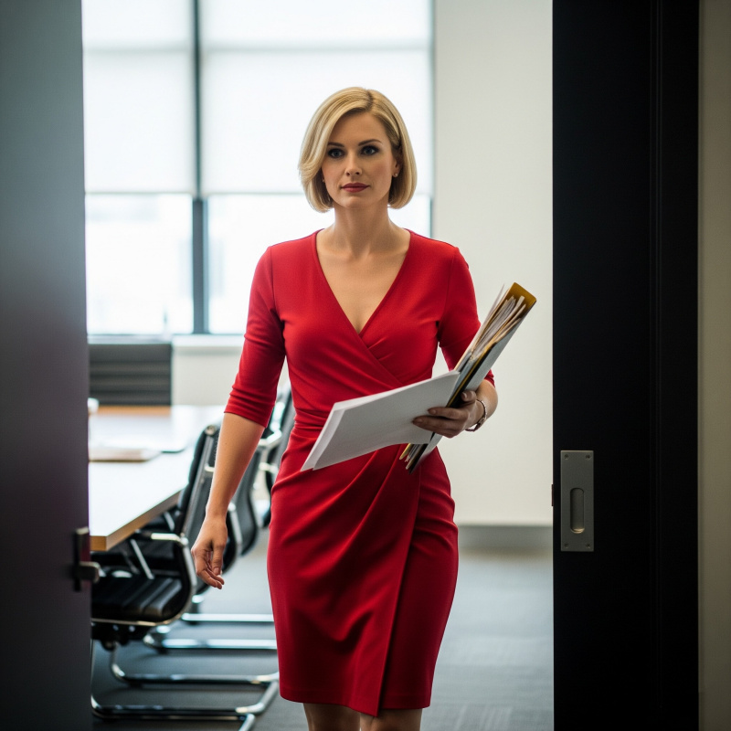

The alarm at 5:30 AM felt like violence against my already-abused psyche. I'd managed maybe three hours of actual sleep, after a late night spent staring at Casey's ceiling while she drilled me on the fine art of feminine performance.
"Keep your elbows tucked," she'd commanded, adjusting my posture like I was a marionette. "Women take up less space. It's conditioning from birth-apologize for existing by making yourself smaller."
Now, stumbling through the January cold toward her apartment, I wondered if this was how prisoners felt walking to their execution-resigned to their fate but still hoping for a last-minute reprieve.
Casey answered the door before I could knock, already dressed and caffeinated. She moved with the efficiency of a general preparing for war, which, I supposed, was exactly what this had become.
"You look like hell," she observed, taking in my rumpled appearance.
"I feel like hell. Can we just get this over with?"
"The more completely you commit, the faster this will be over with." She gestured toward her bedroom. "Everything's ready."
If this was war, Casey's bedroom had been transformed into a military staging area. I stared at the collection of items she'd laid out on the dresser like surgical instruments. Makeup supplies. A bottle of medical grade adhesive. A corset that looked like it belonged in a Victorian nightmare. Several cardboard boxes on the bed, their contents hidden but ominous. A black garment bag hanging from her closet door.
"I now owe them several large favors, but Alex outdid themselves," Casey said, opening the first box with ceremony. "High-end breast forms. D-cup."
"D?? That's way too big."
"And your shoulders are way too broad. Trust me, you need these to balance them out."
The forms looked disturbingly realistic-soft, weighted, with convincing nipples that made my stomach lurch. They were heavier than I'd expected, dense with whatever material made them feel like actual flesh. Movement that would fool anyone who wasn't planning to get to second base. Which, given my current situation, had better be everyone.
"These will create natural movement," Casey explained, lifting one form. The weight made it sway subtly. "Much more convincing than padding. And they'll stay put all day."
"How... attached are we talking?"
"Surgical cement. Same stuff they use for prosthetics." She was already grabbing the bottle, as if I'd already agreed to glue these monstrosities to myself. Or maybe my agreement just didn't matter. "These aren't coming off until you want them off."
I pulled off my shirt, exposing the smooth chest that now matched my hairless arms and legs. I'd spent the wee hours of the morning using up the rest of the depilatory cream on everything below my eyebrows. Now I understood why.
The intimacy of the application process hit me as Casey moved closer, her breath warm against my neck as she positioned the first form. Her fingers were clinical but gentle, smoothing the adhesive along my chest, her hand lingering a moment longer than necessary as she pressed the form into place.
"Hold still," she murmured. The adhesive created an immediate bond-skin to silicone, permanent until dissolved with remover. "Wouldn't want anything to be crooked."
The second form went on with equal care, Casey's hands lingering as she blended the edges with makeup to hide the seams. When she stepped back to assess her work, something flickered across her expression-not just professional satisfaction but something hungrier. Her eyes lingered on my transformed silhouette before she caught herself.
"Perfect," she breathed, and I caught an unexpected huskiness in her voice that reminded me of our campaign nights years ago..
"Now, your waist," Casey said suddenly, as if snapping herself back to reality. She produced a black satin corset with steel boning that looked like medieval torture equipment. The kind of garment designed to reshape the human body through sustained compression.
"This will give you a figure that'll make Beau forget you ever had a Y chromosome," Casey said, wrapping it around my waist. "Breathe out."
The corset wrapped around my torso like a silk python. As Casey pulled at the laces, I couldn't help but think how the garment was political ambition itself-methodical, suffocating, and designed to reshape everything in service of some larger strategy. Each pull of the laces squeezed breath from my lungs while I told myself this was temporary, just another tactical move in a game I'd been playing my entire career. By the time she'd tightened it to her satisfaction, I understood why Victorian women spent their lives fainting.
"I can't breathe."
"You'll adjust. Look."
I looked in the mirror and almost didn't recognize myself. The corset had carved an hourglass from my rectangular frame. I saw a figure that belonged in a pinup calendar-dramatic curves created through engineering and force. Combined with the realistic breasts, I had a figure that was undeniably, dramatically female.
"Jesus," I breathed.
Casey stood behind me, her hands resting lightly on my newly defined waist. In the mirror, I watched her take in my transformation with the same focused intensity she brought to everything she deemed important. Including me, apparently. I caught her looking at me with an expression I couldn't quite read-interest? calculation? hunger?
Then she stepped back, all business again.
"You said you wanted to escalate." Casey opened the garment bag with a flourish, revealing a red dress that made yesterday's navy sheath look conservative. "This right here is escalation."
The dress was fitted, designed to showcase the figure the corset had created. The neckline plunged lower than anything I'd consider work appropriate, while the skirt hit several inches above my knees.
"Casey, this is-"
"Exactly what we need. Put it on."
The dress clung to every curve the undergarments had created, the red fabric catching light in ways that demanded attention. In the mirror, I looked like a woman designed to provoke reactions.
"Alex brought it from the station's wardrobe department," Casey explained. "Television makeup artist has access to everything. Borrowed a few things from various anchors' spare outfits."
"Borrowed."
"Temporarily requisitioned for a good cause." Her smile was sharp.
"Fine," I said, stepping into the dress. "I just hope this makes Beau more miserable than me."
Casey zipped me up, her fingers trailing along my spine with deliberate slowness. The touch sent unexpected shivers through me, and when I glanced back, she was studying my reflection with unmistakable appreciation.
"You're going to be devastating," she said softly, and something in her tone made me wonder if we were still talking about strategy.
"One more thing," she said, producing a makeup case. "Your face needs to match the effort."
Twenty minutes later, my face had been transformed as dramatically as my body. Casey had clearly been paying attention to whatever Alex applied to my face yesterday morning. Contouring made my cheekbones sharp enough to cut glass. Lips painted a red that matched the dress. Eyes that looked larger, more feminine, more dangerous.
"Perfect," Casey breathed, and this time I was certain I caught something in her voice. The same appreciation that I'd noticed when she'd zipped me into the dress. "He won't last the week. Beau's spent his entire career chasing anything in a skirt. The more feminine you look, the more uncomfortable he'll be with his own response."
I felt my face flush. "You think he's...?"
"I think he's a predictable man with predictable appetites," Casey said simply. "And that gives us leverage."
At work, the reactions were immediate and dramatic. Jeff at security actually stood when I walked past, his eyes tracking movement I hadn't even realized I was making. The breast forms created natural bounce with each step, the corset forced a hip-forward walk that made the dress sway. Thirty years of government employment hadn't taught him to hide his lizard brain's response to synthetic tits and strategic cleavage.
"Morning, Jeff."
"Good morning, Ms.-" He caught himself, then looked down at my new employee ID. "Yvonne. You look..."
"Nice?"
"Yes ma'am. Very nice."
I made it to my office without major incident, though I left a wake of confused staff members trying to reconcile yesterday's awkward transformation with today's polished presentation.
"Holy shit," Derek said when he appeared in my doorway. His eyes went immediately to my chest-the realistic breast forms creating cleavage that the dress emphasized-before snapping back to my face. "I mean, good morning."
"Morning, Derek. What've you got for me?"
He fumbled with his folder, clearly struggling to maintain eye contact. "The, uh, the education committee wants to meet about the funding formula. They requested you specifically."
"Casey will handle it," I said smoothly. "I'm focusing on internal matters this week."
"But they specifically-"
"Casey will handle it," I repeated. "Next?"
The senior staff meeting was a masterclass in political survival instincts masquerading as workplace tolerance. Janet's eyes widened when I entered-the particular expression of a woman who'd spent her career navigating men's fragile egos, now confronted with whatever fresh hell this represented. Her gaze dropped to my neckline before snapping away with the guilty speed of someone calculating whether supporting me or distancing herself would better serve her pension prospects. Kevin developed a sudden fascination with the ceiling tiles. Casey took the entire spectacle in, dark eyes flicking from one staff member to the next, a satisfied smile on her face.
But then we got underway, and everything returned to normal, just like it had yesterday. Things were going to be fine with the staff. I could handle this.
{kind=link}

And then Beau arrived.
He walked in scrolling through his phone, already talking. "Sorry for the delay, the environmental lobby is having conniptions about the mining permits and-"
He looked up, registered my appearance, and stopped mid-sentence.
His eyes dropped to my chest with the helpless magnetism of a man whose entire political career had been built on confident masculinity, now faced with the walking embodiment of his own psychosexual dysfunction. The color flooding his cheeks could have been embarrassment, but it was just as likely the particular shame of a predator recognizing he'd been out-predatored by his own prey.
"Good morning, Governor," I said, my voice pitched slightly breathier than usual. Another trick from Casey's coaching.
"I-yes. Good morning, Yvonne." Her name came out strangled.
For exactly four minutes and thirty seconds, he attempted normal meeting behavior. Discussed budget items, reviewed legislative priorities, maintained eye contact with deliberate effort. But I caught him stealing glances when he thought I wasn't looking-at my legs when I crossed them, at the way the dress fabric stretched across my corseted waist.
Then his phone rang.
"Urgent donor call," he announced, already standing. "Yvonne, handle the education committee briefing. I'll... catch up later."
He fled like he'd suddenly remembered he'd left the stove on.
Around the table, my staff exchanged glances. Janet cleared her throat diplomatically.
"Should we reschedule the infrastructure discussion?"
"No need. I can handle both." I smoothed my skirt, noting how the gesture drew attention to my legs. I allowed myself a brief moment to savor my victory, and then dove back into the agenda. The people's work awaited.
The meeting continued with remarkable efficiency. Despite the governor's absence and my distracting appearance, we moved through agenda items with professional competence. The staff adapted to my transformation, treating me with the same respect they'd shown yesterday, though maintaining careful eye contact required visible effort.
By that evening, I was exhausted in ways I hadn't known were possible. The corset had compressed my ribs for twelve hours. The breast forms had thrown off my balance all day. The heels had turned walking into a constant balancing act.
But I'd also watched Beau flee three separate interactions, seen him fumble basic conversations while stealing glances at my transformed body. For a moment, I let myself consider the possibility that the womanizer governor was attracted to his Chief of Staff, before shooing the thought away as being too profoundly fucked up to take seriously.
"You made some real progress today," Casey observed as we parked in front of her apartment. "There's no way Beau can keep going like this."
"Let's hope so, because I'm not sure how long I can keep going either."
That evening's coaching session was more intensive than the night before. Casey had prepared a curriculum that would have impressed the diplomatic corps.
"Sit on the edge of the chair," she instructed. "Women perch. It keeps your legs together and makes you look interested."
I practiced the position while she adjusted my posture.
"Touch your hair when you're thinking. Not consciously-it should look unconscious. Like this." She demonstrated, fingers trailing through her dark bob with casual grace.
"And when someone's talking to you, tilt your head slightly. Shows engaged listening."
We drilled mannerisms until they became muscle memory. How to smooth my skirt when sitting. The specific way to cross my legs. How to adjust my necklace without drawing attention to the gesture.
Then came the eyebrow reshaping.
"Alex shaped things a little, but your brows are still too masculine. It won't take much to make them more dramatic," Casey said, approaching with tweezers. "Trust me."
She positioned herself between my legs, her face inches from mine as she worked. Each pluck sent sharp pain across my brow, but I stayed still, breathing in her perfume while she reshaped my face one hair at a time.
"Higher arch," she murmured, plucking with scientific precision. "Thinner overall. More elegant."
Her breath against my face smelled sweet, her fingers gentle as they stretched the skin for better access. The intimacy should have been awkward, but exhaustion had numbed my capacity for discomfort.
"Almost done," she said, leaning closer to examine her work.
When she finished, I looked in her bathroom mirror and saw a stranger. The thin, arched eyebrows changed the entire geometry of my face, making my eyes appear larger and more feminine.
"You said you were just doing a little plucking!"
"They'll grow back," Casey said, though her tone suggested it might not be so simple. "Eventually. We can fill them in until they do."
By the time I got home that night, I could barely keep my eyes open. The exhaustion was bone-deep-physical from the corset and heels, emotional from the feminine performance I was determined to give.
Thursday morning arrived with Casey at my apartment door at 7:00 AM, garment bag in her hand and confidence in her stride.
"Today we push harder," she announced, brushing past me into my bedroom. From the garment bag emerged a black dress that made yesterday's red number look modest. The skirt hit mid-thigh-still technically professional but designed to showcase legs. The neckline created a valley of cleavage that the D-cup forms would fill dramatically.
"This is pushing it, Casey."
"That's the entire point." She produced the corset, already holding it open. "Arms up."
The fact that I knew from yesterday what to expect from the corset didn't make it any less uncomfortable. Casey pulled the laces with determination, pulling until I could barely breathe, creating an even more dramatic hourglass figure.
"I can't sit in this," I gasped.
"You can. You just can't slouch." She tied off the laces. "Perfect posture is very feminine.".
"Can you do your own makeup today?" she asked, already knowing the answer. The previous evening's practice had been thorough.
I applied foundation with the careful movements she had taught me. Casey followed with the complex eye makeup that created feminine drama. The glossy lipstick went on last-a deep red that demanded attention.
Looking in my bathroom mirror, I saw a woman designed to provoke reactions. The dramatic eyebrows Casey had shaped framed eyes made larger by the application of shadow and liner. The dress showcased curves that moved naturally with each breath.
As we walked toward the door, I caught sight of myself in Casey's full-length mirror. "I don't know, Case. I think this is all too much."
The complaint sounded like someone else had made it. Casey's voice coaching was showing clear results. My natural pitch had lightened, picking up feminine inflections without conscious effort. The gestures Casey had drilled into me-smaller movements, keeping elbows close to the body, touching my hair-were becoming automatic.
I was becoming Yvonne.
"It's perfect," Casey said from behind me. "He won't last an hour."
At the office, the reactions were even more dramatic. Janet actually gasped when she saw me. Kevin walked into another chair-the same chair as Tuesday, like it had developed a personal vendetta against him.
But it was Beau's reaction that mattered.
He arrived at our brief morning check-in already agitated, moving with the nervous energy of someone fighting internal battles. When he saw me leaning over my desk to review documents-a position that showcased the dramatic cleavage-he actually froze in the doorway.
{kind=link}
"Governor?" I straightened, noting how his eyes tracked the movement of my breasts. "Did you need something?"
"I-the constituent services report. Is it ready?"
"Yes, of course it is. Here you are." I handed him the folder and returned to sit behind my desk, smoothing my skirt and crossing my legs as I sat. The movement drew his gaze downward before he caught himself.
"Right. Thanks. Of course." He was already backing toward the door. "I'll... see you later."
Ninety seconds. That's how long he'd lasted in my presence.
Beau avoided me completely the rest of the day. When forced to interact, he'd addressed all his comments to Casey, referring to me in the third person even when I was sitting right there. "Perhaps Yvonne could review these numbers" instead of asking me directly. Like I was a ghost haunting his administration.
It wasn't complete victory. Not yet. But it was very clear who was winning.
Friday morning, Casey arrived with what she called "the final form"-a outfit designed to end the war through overwhelming femininity.
The skirt was the shortest yet, barely skimming professional length. The sheer blouse showed the lace bra beneath, creating layers of visual interest that drew the eye inevitably downward. Four-inch heels made my legs look impossibly long and forced an even more pronounced hip-forward walk.
"This is insane," I said, studying my reflection. The woman in the mirror looked like she belonged in a boardroom fantasy, not a government office.
"This is strategy." Casey adjusted the blouse's neckline, ensuring maximum impact. "Alex outdid themselves with the hair and makeup supplies."
The new wig was elaborate-blonde waves that fell to my shoulders and moved naturally. False eyelashes created dramatic eyes that dominated my face. The overall effect was stunning and completely inappropriate for actual work.
I looked like a male fantasy of a professional woman. Which was exactly the point. Make Beau so uncomfortable with what he'd created that he'd have no choice but to end it.
And it worked. At the office, I deployed every strategy Casey and I had devised. I positioned myself in Beau's direct line of sight during meetings. Leaned forward while discussing policies, knowing exactly what view the angle provided. Crossed and uncrossed my legs with calculated timing.
The effect was immediate and devastating. Beau could barely maintain conversations, his eyes constantly dropping to my neckline or legs before snapping away with guilty speed. He fumbled basic policy discussions, forgot the names of longtime staffers, excused himself from meetings with increasingly transparent desperation.
By that afternoon, I knew I had him.
"You're staring," Casey said, catching me examining my reflection in my office window.
"I don't recognize myself."
"Good. That means it's working." She moved beside me, our reflections side by side-her natural femininity next to my manufactured version. "He's in his office. Alone. Now's your chance."
I took a breath-shallow, all the corset would allow-and clicked down the hallway in heels that announced every step. The governor's suite was quiet, his assistant away from her desk.
I knocked once and entered without waiting for permission.
Beau was behind his desk, signing documents with the focused intensity of someone trying very hard to look busy. He glanced up, saw me, and his pen stopped moving.
"Governor? Do you have a moment to discuss the environmental impact study?"
"I-sure. Of course."
Instead of sitting in the usual chair across from his desk, I perched on the desk's edge. The position put me directly in his personal space-close enough that he couldn't avoid the view down my sheer blouse.
"The study recommends delays in three key projects," I said, leaning forward to point at specific sections. The movement created a vista of cleavage that made Beau's breathing audibly shallow. "But I think we can turn this to our advantage."
"How?" His voice came out rougher than intended.
I shifted slightly, crossing my legs with deliberate care. "These delays could cost us the election if we frame them wrong," I continued, placing my hand on his arm while making the point. The contact made him flinch. "But if we can present them as environmental responsibility rather than bureaucratic failures..."
{kind=link}
"Yvonne, I-"
"Think about the optics," I interrupted, leaning closer until my perfume surrounded him. My voice dropped to the breathy tone Casey had coached me on. "Governor Fenstemaker, putting the environment before special interests. It's exactly the kind of principled leadership voters want to see."
Beau was sweating. His eyes kept dropping to my neckline before forcing themselves back to my face with obvious effort. When I reached across him to grab another document, making sure to brush against his shoulder, he actually groaned.
"That's... that's a good strategy," he managed.
"I thought you'd approve." I touched his arm again, letting my fingers linger. "Your instincts about messaging are always so sharp."
For twenty more minutes, I deployed every weapon in Casey's arsenal. I touched my hair while thinking, tilted my head while listening, smoothed my skirt in ways that drew his attention to my legs. I leaned into his personal space to review documents, making sure he caught glimpses down my blouse. I laughed at his awkward attempts at humor, the sound breathy and encouraging.
Each gesture was calculated torture disguised as policy discussion. I watched him struggle to maintain professional composure while his eyes betrayed exactly where his attention was focused. The powerful governor who'd spent a week trying to humiliate me was reduced to a sweating, stammering mess by strategic cleavage and feminine performance.
Finally, he cracked.
"Enough," he said, standing abruptly. "Evan, this has to stop."
"What has to stop?"
"This. All of this." He gestured at my outfit, my transformation, the entire performance. "You win, okay? You've made your point. Monday-Monday you need to go back to normal."
Victory tasted like expensive lipstick and felt like compressed ribs-sweet and suffocating in equal measure. The irony wasn't lost on me that I'd had to sacrifice my own comfort, my own identity, to prove a point about workplace respect. But winning ugly was still winning, and in politics, that was the only thing that mattered.
"Go back to normal?"
"Suits. Ties. Being Evan. Whatever this was supposed to prove, you've proven it." He was already moving toward his desk, putting distance between us. "I can't-you win."
"I need to hear you say it."
"Say what?"
"That my strategies aren't weak. That approaching politics with consideration for others isn't feminine in a bad way." I stood, smoothing my skirt with deliberate care. "That you were wrong to mock my approach."
"Fine. You were right. Your strategies are solid. I was wrong to... to characterize them the way I did." The words came out grudgingly, but they came. "Happy?"
"And you'll follow my advice going forward? On messaging, on crisis management, on how we handle the campaign?"
"Yes. Christ Evan, yes. Just... no more of this."
I gathered my purse with the satisfaction of a general accepting surrender. "Monday morning, back to normal."
"Monday morning," he confirmed, already reaching for his phone, looking for any excuse to avoid eye contact.
I walked to Casey's office on clouds of triumph, the four-inch heels feeling like wings.
I found myself thinking about the way she'd looked at me this morning-the same intensity I remembered from our campaign encounters. Maybe this week had awakened something between us again. Maybe helping me had brought back feelings she'd buried under professional necessity.
The thought should have complicated my relief about Monday's return to normal, but instead it added another layer of satisfaction to my victory.
Casey looked up from her laptop as I entered.
"It's over," I announced, unable to keep the triumph out of my voice. "He caved. Monday I go back to being Evan."
Casey's fingers paused over her keyboard. For just a moment, something flickered across her expression-surprise, maybe, or disappointment. But it was gone so quickly I might have imagined it.
"That's wonderful," she said, closing the laptop with a soft click. "You must be relieved."
"You can't imagine. I was starting to think this would go on forever."
"You deserve to celebrate. Get away this weekend, clear your head before Monday's return to normal." Casey leaned back in her chair, studying me with those dark eyes that missed nothing. For a moment I wondered if she was disappointed that our unusual week was ending. The thought that she might miss seeing me this way made the tiniest part of myself regret giving it all up. Then I shifted my weight and the four-inch heels sent a spike of pain through my feet, reminding me exactly how much I was looking forward to walking like a human being again.
"Didn't you mention wanting to go ice fishing? That place with no cell service?"
I had mentioned it, months ago during a casual conversation about stress relief. The remote cabin where my father used to take me, hours from civilization and blissfully disconnected from political emergencies.
"That's actually perfect. Complete disconnect, reset before diving back into normal crises that don't involve a push-up bra. I'll just go for a day, though. We can reconvene on Sunday, go over the new poll numbers."
"I'll handle anything that comes up tomorrow," Casey offered. "You've earned some time to decompress."
The beautiful simplicity of the plan crystallized in my mind. Twenty-four hours of masculine solitude-fishing, drinking beer, remembering who Evan Cross actually was beneath the corsets and cosmetics. Time to process the psychological whiplash of the past week before returning to normal life.
"You're amazing, Casey. I don't know what I'd do without you."
"That's what I'm here for," she said, already opening her laptop again. "Go home, get packed. I'll handle the Friday afternoon cleanup."
At home, I peeled off the elaborate feminine costume with the relief of a soldier removing battlefield armor. The breast forms came off with medical adhesive remover that stung but liberated my chest. The corset unlaced with a rush of oxygen to compressed ribs. The makeup washed away to reveal Evan Cross beneath the performance.
Standing in my boxers and a Loyola t-shirt, I looked in the bathroom mirror and saw familiar features emerging from their week-long disguise. The thin eyebrows would take time to grow back, but everything else was temporary damage.
By Saturday morning, I was at the cabin in thermal gear and work boots, cutting holes through lake ice that reflected the gray winter sky. No cell service meant no crisis calls, no strategic emergencies, no political calculations. Just the rhythm of wind across frozen water and the blessed silence of being alone with my thoughts.
I drank whiskey from a flask and pulled perch through holes in the ice, slowly remembering what it felt like to inhabit my actual body instead of a stranger's. The cold was sharp and honest-like taking off shoes that had been too tight for a week.
Sunday afternoon, driving back toward civilization, I felt genuinely optimistic about Monday's return to normal. I'd beaten Beau at his own game and emerged with my authority intact.
Twenty miles from town, my phone exploded with notifications. Forty-seven missed calls, dozens of urgent texts from reporters, all timestamped from Saturday evening and this morning. Their interest seemed inexplicable, asking if I wanted to comment but not specifying the subject.
Exhausted from the drive and still basking in masculine satisfaction, I ignored them all. Whatever political emergency had erupted, Casey could handle it for another couple hours.
At home, I ordered pizza, opened a beer, and took a long shower to wash away the week's stress and the cabin's grime.
Around four o'clock, feeling human again in clean clothes, I called Casey to let her know I was back and ready to go over those poll numbers we'd discussed.
"Jesus, Evan, thank God," she answered immediately. "I've been fielding calls all weekend. The Tribune wants a follow-up statement, Channel 7 is pushing for an exclusive interview, and the advocacy groups are already planning some kind of rally-"
"Casey, slow down. What are you talking about?"
A pause. "You haven't seen the Grudge Report story, have you?"
Something in her tone made my stomach drop. "No. Why?"
"Check your phone. The post from yesterday. Every major outlet is running with it now."
I pulled up the Grudge Report on my phone, and there, in sixty-point type flanked by animated police sirens, was the headline that would destroy my life:
CROSS DRESSER: Guv's Chief Goes Full Femme
Male Aide's Transition Stuns Capitol
The photo showed me in Friday's outfit, walking out of the Executive Office Building with a broad smile on my face. How happy I'd been in that moment, relishing my complete victory over Beau. My face was perfectly made up, the dress showcasing curves that looked natural and feminine. The woman in the image was stunning, confident, unmistakably real.
The smaller photos traced the week's progression-Tuesday's navy dress, Wednesday's red escalation, Thursday's black sophistication, Friday's devastating finale. A visual story of transformation that looked like authentic gender transition to anyone who didn't know the truth.
My mind reeled. How had this happened? I'd been so careful to stay out of public view. Nobody outside our office could've-
Tommy.
The little shit had gotten his revenge after all.
I stared at the gorgeous woman on my phone screen, then down at my jeans and flannel shirt, and understood that I was completely, utterly, permanently fucked.
"Evan?" Casey's voice came through the phone. "Are you still there?"
I knew she would have answers. Casey always had answers.
But for the first time, I was afraid to hear what they were.